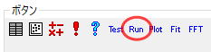
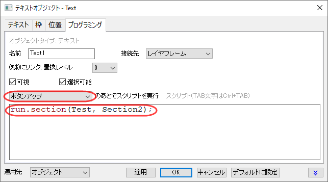

LabTalkを使いましょう
Tutorial-Get-Started
概要
LabTalkはOriginのスクリプト言語です。スクリプトを記述してインポートやデータ解析、グラフや出版物の作成を行うことができます。LabTalkスクリプトは独立して実行することもOriginのGUIにある解析ダイアログの一部として実行することもできます。
LabTalkスクリプトは、LabTalkのインタプリタにより受け取られ、解釈･実行される、ひとまとまりのLabTalkテキストのことです。LabTalkスクリプトは、1つ以上のプログラミングステートメントで構成され、それぞれに割り当てられた操作を実行します。スクリプト中の各文の文末には、他の文と分割するためにセミコロン(;)を付ける必要があります。
LabTalkプログラミングの構文には次の種類のエレメントがあります。システム変数,コマンド,関数,マクロ,オブジェクト,Xファンクション
LabTalkスクリプトを実行する方法は複数あります。頻度が高いものとしてはスクリプトウィンドウ/コマンドウィンドウ から,.ogsファイルから,ツールバーボタンから,グラフオブジェクトからがあります。
学習する項目
このチュートリアルでは次のことを学ぶことができます。
- スクリプトウィンドウまたはコマンドウィンドウからLabTalkスクリプトを実行する方法
- .ogsファイルからLabTalkスクリプトを実行する方法
- ツールバーボタン/グラフオブジェクトからLabTalkスクリプトを実行する方法
- それぞれのLabTalkエレメントの基本的な使い方
- LabTalkスクリプトを実行方法の違いを比較
ステップ：
スクリプトウィンドウ/コマンドウィンドウからスクリプトを実行
スクリプトウィンドウとコマンドウィンドウはLabTalkスクリプトを実行する際に最もよく使われます。それぞれのウィンドウは1行または複数行のスクリプト実行をサポートしています。
スクリプトウィンドウでは1つのカーソルがあり、Enterキーを押したときにハイライトされたコードまたは今カーソルがある場所のにあるコードを実行します。対して、コマンドウィンドウにはプロンプトがありプロンプトに入力された全てのコードを実行します。
コマンドウィンドウにはオートコンプリート機能やXファンクションのヒント、コマンド履歴があり、履歴からコマンドの再実行をサポートしています。しかしコマンドウィンドウの履歴はスクリプトウィンドウのように編集できません。ユーザは必要に応じてどちらのウィンドウからスクリプトを実行するか選択できます。
スクリプトウィンドウから実行
- Originを起動し、ウィンドウ：スクリプトウィンドウを選択（もしくはAlt+Shift+3を押す)してスクリプトウィンドウを開きます。
- スクリプトウィンドウのメニューから編集：スクリプトの実行が選択されていることを確認します。
- スクリプトウィンドウで次のテキストを入力してEnterキーを押し、スクリプトを実行します。
type -b "Hello World"
- 注目ボックスがポップアップし”Hello World”テキストが表示されればスクリプトはうまく実行できたことになります。
- OKをクリックして、注目ボックスを閉じます。以下のスクリプトをコピーして、スクリプトウィンドウに貼り付けます。実行する場合、貼り付けた3行のテキストを選択してEnterキーを押します。スクリプトにより4つの列を持つ新しいワークブックが作成され、ワークブック名(文字列レジスタ%Hに保持されています)と列数(置換表記$(wks.ncols)に保持されています)をスクリプトウィンドウに出力します。
-
newbook;
wks.ncols=4;
type -a "In %H, there are $(wks.ncols) columns."
- では現在の行を実行することなくスクリプトウィンドウに複数列を入力する方法を学びましょう。
- 次のスクリプト(4行あります)を1行ずつ入力するとします。
-
loop(num,1,4)
{
num =;
}
- スクリプトウィンドウにあるすべてのコンテンツを消去し、スクリプトウィンドウのメニューから編集：スクリプトの実行の選択を解除します。
- これでスクリプトの実行を無効にしたので、Enterキーと使って新しい行を作成して上記4行のスクリプトを1行ずつ入力することができます。
- 入力完了後、編集：スクリプトの実行を再度選択し入力した4行を選択してEnterキーを押すことで実行します。
コマンドウィンドウから実行
- Originを起動し、ウィンドウ：コマンドウィンドウを選択（もしくはAlt+3を押す)してコマンドウィンドウを開きます。
- 上記3と4の手順に従って、コマンドウィンドウで両方のスクリプトサンプルを実行します。2つ目のスクリプトサンプルでは実行時に全てのスクリプトを選択する必要はありません。
 |
実行せずに複数行入力するほかの方法としてCtrl+Enterで新しい行を作成します。これはスクリプトウィンドウでもコマンドウィンドウでも使えます。
|
OGSファイルからスクリプトを実行
- 以下のスクリプトをコピーして、空のスクリプトウィンドウに貼り付けます。
type -b "HELLO WORLD";
[Section1]
type -a "Hello";
[Section2]
type -a "World";
- スクリプトウィンドウのメニューからファイル[テキスト形式]：新規保存をクリックしユーザファイルフォルダにTest.ogsとしてスクリプトを保存します。
- コマンドウィンドウを開き(ウィンドウ:コマンドウィンドウもしくはAlt+3)、次のテキストを入力してEnterを押します。
-
run.file(Test)
-
- run.file( )はLabTalkの Run オブジェクトのメソッドです。これにより、特定の.ogsファイルにあるスクリプトを実行することができます。この場合、名前のあるセクションの前にあるファイルの開始部分のスクリプトが実行されます。
- OKをクリックして”HELLO WORLD”と表示された注目ボックスを閉じ、次のテキストをコマンドウィンドウに入力してEnterを押します。
-
run.section(Test, Section1)
- run.section( )もLabTalkの Run オブジェクトのメソッドです。このメソッドで特定の.ogsファイルにある名前のついたセクションのスクリプトを実行します。
| Notes:ユーザファイルフォルダ内に保存した.ogsファイルがない場合、run.file()もしくはrun.section()メソッドを使う場合にはフルファイルパスが必要になります。 |
| .ogsという拡張子はどちらのメソッドでも必要ありません。 |
| どちらかのメソッドを使って実行されたスクリプトは名前つきセクション(もしくはreturnステートメント)にたどり着くと終了します。 |
| typeステートメントはコマンドを実行したウィンドウに内容を出力するよう命令します。 |
カスタムボタンからスクリプトを実行
ツールバーボタンから実行
- 前の章でユーザファイルフォルダに保存されたTest.ogsファイルがあることを確認してください。
- Originを開いてスクリプトウィンドウとコマンドウィンドウが閉じられていることを確認してください。
- メニューから表示：ツールバーを選択してツールバーのカスタマイズダイアログを開きます。ボタングループタブに移動してグループにあるUser Definedを選択します。このグループには10個のボタンがあります。
- ボタンにある追加ボタンをクリックし、ポップアップするボタンの追加ダイアログのボタンイメージで7を選択します。
- OKをクリックするとRunボタンがボタンのサムネイル一覧に追加されます。
- 
- 2つ目のRunボタンをクリックし、さらに設定...ボタンをクリックしてボタン設定ダイアログを開きます。
- ファイル名ボックスの右側にある一覧ボタンをクリックし、ユーザファイルフォルダに作成したTest.ogsファイルを選択します。
- セクション名にSection1と入力します。OKをクリックしてこの設定を適用して、ダイアログを閉じます。
- Originのワークスペースにボタンをドラッグアンドドロップしカスタマイズダイアログを閉じます。
- Originのインタフェースから独立しているこのボタンをクリックするとスクリプトが実行され、スクリプトウィンドウが開き入力した”Hello”というテキストが表示されます。
グラフィックオブジェクトから実行
- ボタンをクリックして空のグラフを作成します。
- 空白の部分を右クリックしてコンテクストメニューからテキストの追加を選択し、ラベルとしてRun2と入力します。
- テキストオブジェクトを選択して右クリックし、プロパティを選択して開くダイアログでプログラミングタブを開きます。のあとでスクリプトを実行のドロップダウンリストからボタンアップを選択し、以下のスクリプトを入力します。
run.section(Test, Section2);
- 
- これで、テキストラベルがボタンになりました。Run2ボタンをクリックすることでスクリプト編集ボックスに追加したスクリプトが実行されます。
|
グラフィカルオブジェクトがボタンになると、編集モード（編集：編集モードもしくはCtrl+Alt+B)を使うか、Altキーを押したままダブルクリックしてプロパティを編集してください。編集モードを使用した場合には、再度選択することで編集モードをオフにできます。
|
Notes:
- ツールバーボタンからスクリプトを実行するためには.ogsファイルが必要になりますが、グラフィカルオブジェクトではスクリプト編集ボックスにLabTalkスクリプトをそのまま入力することができます。
- 編集モードはOrigin2017より前のバージョンではボタン編集モードと呼ばれています。
|
LabTalkエレメント
異なるLabTalkエレメントの利用法とサンプルは下記のようにまとめられます。
- システム変数はOriginの挙動を監視・制御する読み取り専用もしく読み書きできる変数です。
- サンプル：@ASCシステム変素を使うことで自動保存チェックのトリガーとなるプロジェクトサイズ（メガバイト単位）を確認、変更できます。
//次の行のスクリプトを実行することで変数の値を取得します
@ASC = ;
//次の行のスクリプトを実行して変数の値を10 (MB)に設定します
@ASC = 10;
- コマンドは定義されたタスクを実行するステートメント(オプションも含む)です。
- サンプル：Typeコマンドを-nオプションをつけて使用します。
//ダイアログに文字列とともにYes,NOボタンを表示します
type -n "Do you want to continue?";
type -a Script continues here since you clicked Yes.;
- オプションで括弧内に引数を含むステートメントで、単一の値または値の範囲（データセット）を返します。
- サンプル1：Left()関数を使って文字列を処理します
//まず"Hello World」文字列を定義します
string str1$ = "Hello World";
//関数を使って定義した文字列の最初の5文字を取得します
string strLeft$ = Left(str1$,5)$;
strLeft$ = ; //Helloが返るはずです
- サンプル2：いくつかの関数は式の左側に表示することができます。
//定義した一連の数で列Aを埋めます
col(A) = data(600,850,10); // 600から850まで10間隔で列Aを埋めます
- マクロは与えられたスクリプトを新しい変数名に関連づけ、引数を含めてコマンドとしてあとで利用できるようにします。
- サンプル：簡単なマクロを定義し、あとで利用します。
- 最初にtestmacroという名前でマクロを定義するために次のスクリプトを実行します。
def testmacro
{
repeat %1
{
repeat %2
{
type -l "=";
}
type;
}
}
- そのあと次の行を入力することでこのマクロで事前定義したスクリプトを実行します。
testmacro 2 64; // %1 は ‘2’ に %2 は ‘64’ になります
- オブジェクト(表示、非表示どちらでも）のプロパティやメソッドにはLabTalkを使ってアクセスすることができます。
- サンプル1：3.2セクションにあるrun.file()run.section()サンプルをご覧ください。Runオブジェクトの2つのメソッドを使った例があります。
- サンプル2：次のスクリプトを実行することでsystem.pathのprogramパスプロパティが返されます。
System.path.program$ = ;
//Originの実行しているファイル(.EXE)のディレクトリパスを返します
- Xファンクションはタスクを実行し、LabTalkスクリプトからOriginの機能を活用するための主要なツールです。
- サンプル：newbookXファンクションを使って特定のブック名、シート名を持つ新しいワークブックを作成します。
- 以下のスクリプトを実行してください。
//ワークブックをTest1と名づけます（ロングネーム、ショートネームどちらも）
//このワークブックには5つのワークシートが含まれます
newbook name:=Test1 sheet:=5 option:=lsname;
- OriginCで適切に実装された関数はLabTalkスクリプトで呼び出すことができます。
- サンプル：OriginC関数を作成してLabTalkを使ってその関数を呼び出します。
- コードビルダを開いて新しい.cファイルを作成し、次のOriginCコードを貼り付けてください。
double CubeRoot(double x)
{
if(x < 0)
return -10^(log10(abs(x))/3);
else
return 10^(log10(x)/3);
}
- OriginC関数をコンパイルしこのMyFunc関数をLabTalkスクリプトを使って実行します。
double aa = CubeRoot(125);
aa = ;//aa=5 が返されます